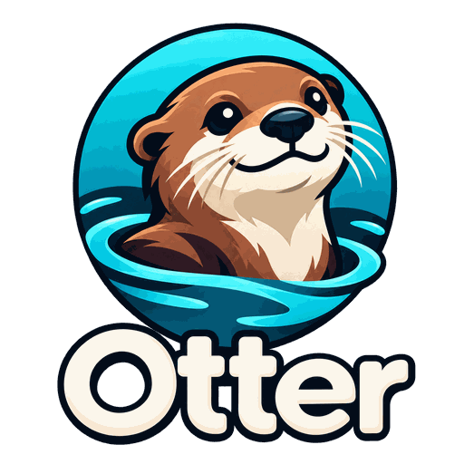

Over-the-air updates for your home-made ESP32 fleet
Otter keeps track of your ESP32 and ESP8266 devices and updates their firmware from a single dashboard, with live progress, staged rollouts, release channels and automatic rollback.
A staged rollout to six weather stations: two canaries first, then the rest. Real time, recorded with the device simulator.
Everything a small fleet needs
Built for the dozen devices on your shelf, ready for the hundred it may become.
📡 Live inventory
Every device checks in with its MAC, IP, firmware version, signal and uptime. See who is online, search, filter and tag them.
⚡ Updates start in a second
Devices long-poll the server: a deployment reaches them within a second or two, and progress streams live to your browser.
🛟 Safe by default
SHA-256 checks, bootloader rollback on ESP-IDF, automatic retries after network drops, and devices that never need an open port.
🪜 Staged rollouts
Release to 10 %, then 50 %, then everyone. Too many failures and the rollout halts before touching the rest of the fleet.
🛤️ Release channels
Publish on beta or stable and let devices follow a channel: they update themselves, and never downgrade.
🔔 Notifications
Failed update, halted rollout, device offline or brand new: get told on ntfy, Discord or any webhook.
🏠 Home Assistant & metrics
Devices show up in Home Assistant with a firmware update entity, and a Prometheus endpoint feeds your Grafana dashboards.
🐳 Runs anywhere
One Docker image for amd64 and arm64 (Raspberry Pi), SQLite inside. HTTPS with Caddy, accounts and API tokens included.
🏷️ CI releases
Push a tag like weather/v1.6.0: CI builds every hardware variant with that version and uploads it to Otter.
How it works
Devices always call the server, never the other way around: no open port, no NAT trouble, sleepy devices welcome.
Add the agent
Drop the ESP-IDF component or the Arduino library into your firmware and point it at your Otter server.
Devices check in
Each device reports its state and waits for orders. It shows up on the dashboard within seconds.
Upload and deploy
Upload a .bin, deploy it to a device, a tag, a channel or the whole fleet, and watch the progress bars fill.
Hardware support
The protocol is small JSON requests over HTTP(S), documented: other boards and languages can speak it too.
| Chip | Framework | OTA + rollback | Long polling |
|---|---|---|---|
| ESP32 family (tested on ESP32-C6, builds for ESP32) | ESP-IDF component | ✓ bootloader rollback | ✓ |
| ESP32 | Arduino library | ✓ image validation | planned |
| ESP8266 | Arduino library | ✓ image validation | periodic check-ins |
Quick start
From nothing to a first over-the-air update in a few minutes.
Start the server
git clone https://github.com/XNinety9/otter cd otter && docker compose up -d docker compose exec otter \ python -m otter.cli create-user admin
Open http://<host>:8000 and log in.
Flash a device
export WIFI_SSID=… WIFI_PASS=… export OTTER_SERVER=http://<host>:8000 cd firmware/examples/esp32-idf pio run -e esp32c6 -t upload
It appears on the dashboard a few seconds later.
Ship an update
# token: python -m otter.cli create-token … export OTTER_TOKEN=otk_… tools/release.sh otter-demo 1.1.0
It builds and uploads every hardware variant. Click Roll out and watch it update.
No hardware yet? tools/simulate.py spins up a fleet of fake devices that speak the real protocol.
Security, honestly
Accounts, API tokens, HTTPS with Caddy and hashed secrets are there today. On the roadmap: per-device tokens and signed firmware, so that even a compromised server can't push an image you didn't sign.
Over plain HTTP, anyone on your network could read passwords and serve a malicious firmware. Put Otter behind HTTPS before it leaves your desk: the guide shows how, and the protocol's security section says exactly what is protected.